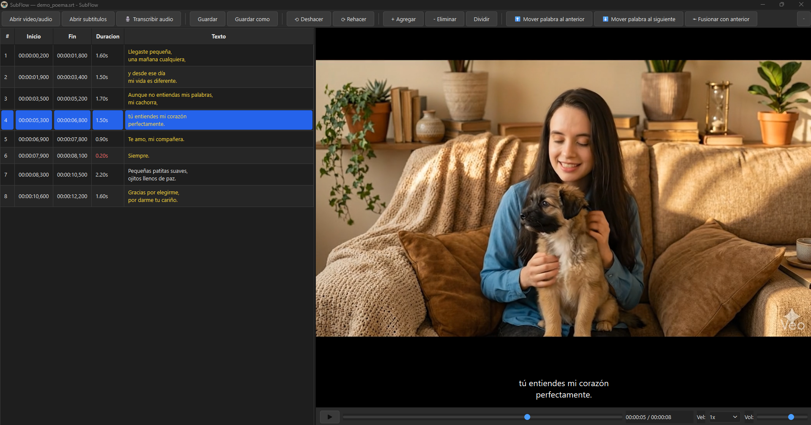

Edita subtítulos como un
profesional
SubFlow transcribe tus videos y audios automáticamente con IA Whisper — todo en tu computadora, sin enviar nada a la nube. Edita, corrige y exporta en formato SRT, VTT o ASS.
SubFlow transcribe tus videos y audios automáticamente con IA Whisper — todo en tu computadora, sin enviar nada a la nube. Edita, corrige y exporta en formato SRT, VTT o ASS.

Diseñado para que tu flujo sea fluido y rápido, desde la transcripción inicial hasta el archivo final.
Corre localmente. Genera subtítulos desde MP4, MP3 y otros formatos sin enviar audio a internet.
Un clic abre el editor en sitio. Backspace mueve palabras al subtítulo anterior. Atajos completos de teclado.
Detecta las pausas reales del habla para cortar subtítulos donde tiene sentido, no donde Whisper los junta.
2 líneas balanceadas, 42 caracteres máximo por línea. Estándar listo desde la transcripción.
Importa y exporta SRT, VTT, ASS/SSA. También TXT plano para enviar a revisión humana.
Ctrl+Z global: revierte ediciones de texto, cambios de tiempo, fusiones, transcripciones enteras.
Detecta automáticamente subtítulos demasiado cortos, largos o con velocidad de lectura excesiva.
Tres pasos simples para tener subtítulos profesionales.
Un solo .exe portable. Sin instalar Python, sin instalar dependencias. Doble clic y listo.
MP4, MP3 y muchos más. SubFlow te pregunta si quieres transcribir automáticamente o cargar subtítulos existentes.
Corrige errores con un clic. Mueve palabras entre subtítulos con teclado. Guarda en SRT, VTT, ASS o TXT.
Sin servicios cloud propietarios. Todo el procesamiento ocurre en tu máquina.
Descarga el ejecutable, ábrelo, y en segundos estás transcribiendo tu primer video.
⬇ Descargar SubFlow para WindowsEs normal. Windows SmartScreen muestra esa alerta a todas las aplicaciones nuevas que aún no tienen "reputación" oficial — pero ✓ Microsoft Defender ya verificó SubFlow.exe y confirmó que está limpio (sin malware). Solo le falta acumular descargas para que la advertencia desaparezca automáticamente.
Para abrirlo:
SubFlow.exe